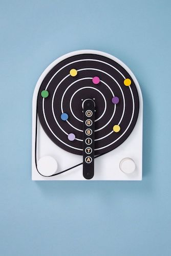

Introduction#
This technical report you will find our work on the project of the open source implementation of the Orbita by Playtronica. It deals with the challenges that were faced by the music-oriented company Playtronica in making their innovative MIDI sequencer available to a broader audience. The Orbita offers a new and exciting way of making music, but its high cost limits its accessibility. On top of that, with the Orbita being a niche product, most people tend not to be willing to spend high amounts of money if they have never used any comparable device before. Moreover, the device’s potential for educational purposes remains largely unused due to usability issues for newcomers. Despite its playful and intuitive nature, so far it finds only very limited use in schools or with children, primarily due to its complexity for those unfamiliar with MIDI sequencers.
To address these challenges, our student group from the Open Source Hardware Seminar cooperated with Playtronica in a project of converting the Orbita into Open Source Hardware. This report highlights the strategies employed to achieve this transformation, emphasizing the goal of making this type of music-making more accessible for more people, including educational settings.
In the following chapters, this report is about our proposed solution approach for the challenges. The elaborated design ideas are presented and the appropriate one for the project scope is selected. Afterwards, the main part presents the results from the project. The results include the first prototype we built with associated documentation, manuals and a tutorial video. The video demonstration is beneficial for a visualization and better understanding of the final product. In addition, a GitHub repository was set up for the entire project, where more information and the license can be found. Afterwards planned dissemination activities and the expected outcome of this project will be discussed on different levels. Finally, an outlook is given and limitations of the project are listed.
Product: The Orbita#

Source: Image of Orbita (Retrieved: 30.07.2023)
The Orbita is a circular MIDI sequencer that can turn color and movement into rythms. The basis is a turning table, which is driven by a motor at which different speeds can be set. The turning table is equipped with metal rings of various sizes, to which magnets can be attached at any point. Sensors according to the number of metal rings are mounted on the underside of a bridge that extends over the turning table. These sensors read the different colors of the magnets and create a sequence that is transmitted to a computer. Depending on the color of the magnet and the ring on which it is attached, different tones, instruments or melodies can be assigned. This setting can be realized with the help of suitable programs on the computer. Thus, it is a playful way to develop creative sounds.
Practice Partner: Playtronica#
This semesters project for the Open Source Hardware Seminar (OSHS) was initiated by the company Playtronica as our practice partner. With the pending launch of the MIDI sequencer Orbita, they were looking for a solution to make the instrument accessible to a broader crowd by implementing it as Open Source Hardware.
Playtronica operates as a multifaceted entity, including both a startup and a vibrant community. In the company work creative artists and skilled engineers from diverse backgrounds. Their endeavors range from crafting innovative music devices to orchestrating captivating interactive events and installations. Currently, Playtronica has successfully established offices in both Berlin and Paris, furthering their mission to innovate, entertain, and foster creativity within a global community of like-minded people.
Playtronica was founded in 2013, marked by their initiation of music workshops for children and captivating performances at various music and science festivals. A significant milestone for the company came in 2016 with the launch of the Playtron device - a revolutionary creation that allows individuals to play music on any object capable of conducting electricity as on a piano keyboard. In 2018, they further expanded their product line with the introduction of the TouchMe device, which allows people to produce music using their own skin as an instrument.